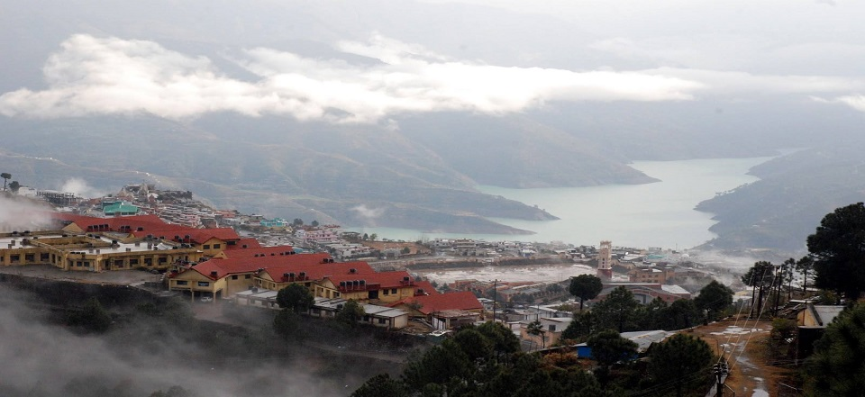
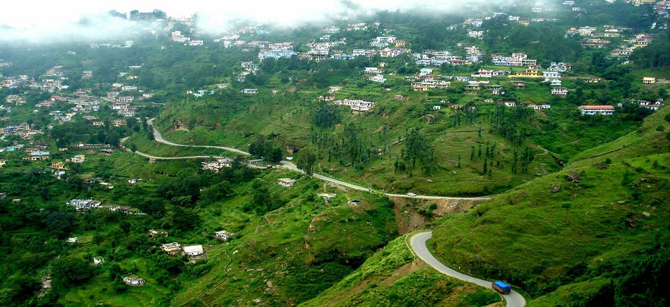
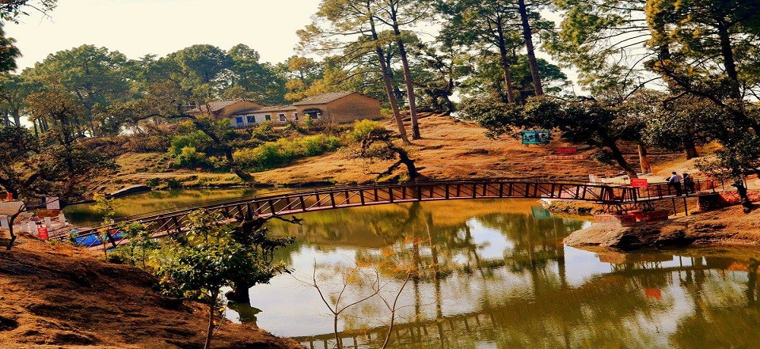
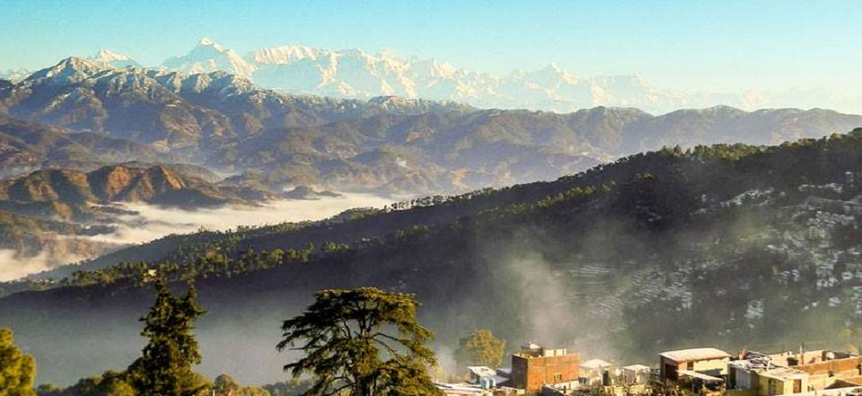
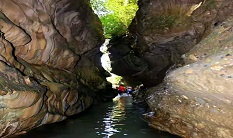
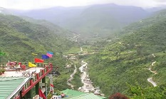
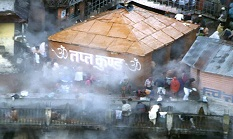

Uttarakhand Traveller
- 
- 

- 
- 

Robber's Cave
The 600 meters long river cave (Robber’s Cave) is known by the locals as Ghuchukpani . . .

Sahastradhara
The name Sahastradhara literally means ‘The Thousand Fold Spring’ is a popular tourist . . .

Tapt Kund
Tapt Kund are the famous hot springs just below the temple. The sulphurous waters have . . .